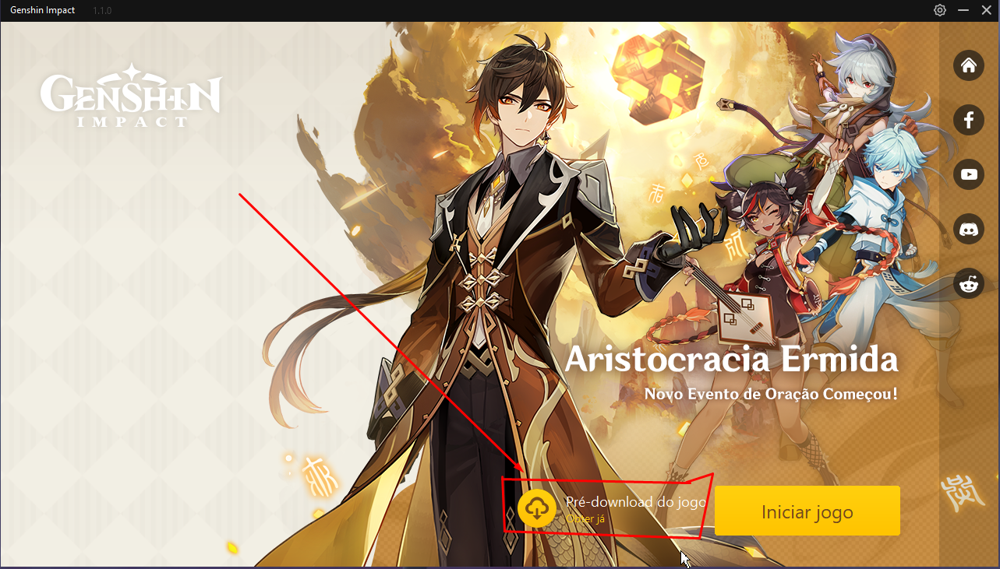
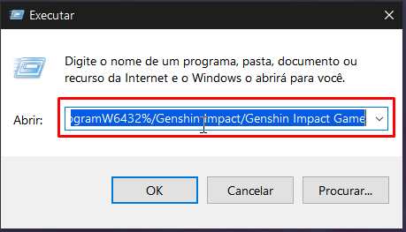
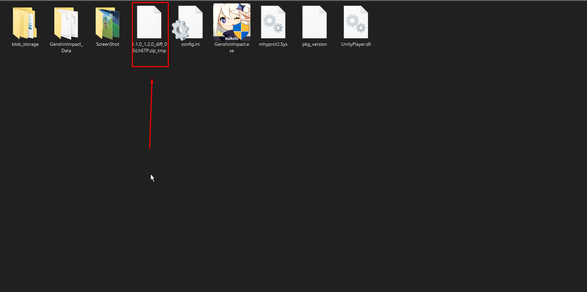
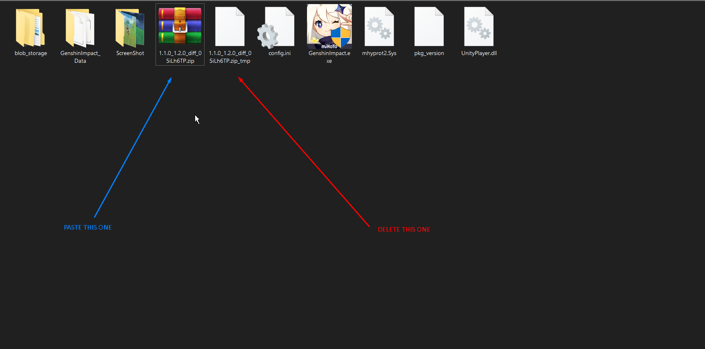

3BEC4FBD206C44305ED98B27245C125Bhttps://autopatchhk.yuanshen.com/client_app/update/hk4e_global/10/1.2.0_1.3.2_diff_sHu9eOFd.zip4CECEE1CA156A1D837879C509318E1BChttps://autopatchhk.yuanshen.com/client_app/update/hk4e_global/10/1.2.0_1.4.0_diff_kO7vMycf.zipE9FAFF0BE1172B6C1810EA9C0E4A84C6https://autopatchhk.yuanshen.com/client_app/update/hk4e_global/10/1.3.0_1.3.2_diff_ryqTKPYO.zip5268B61186CE993583B4AE849CB8EB5Bhttps://autopatchhk.yuanshen.com/client_app/update/hk4e_global/10/1.3.0_1.4.0_diff_hLOEnPIc.zip735B91CC82014F9531EDC8C6E764F35Ahttps://autopatchhk.yuanshen.com/client_app/update/hk4e_global/10/1.3.2_1.4.0_diff_1P539V4J.zip*This is for those having problems download a fresh install game without coming from older versions!
789BB8815021468D180CFA2AE6CA648Ahttps://autopatchhk.yuanshen.com/client_app/pc_mihoyo/20210317_67c8f1002bb26672/GenshinImpact_1.4.0.zip1 - First, you guys need to update the launcher by yourselves and it's pretty simple, you only have to open the launcher and it will update itself.
2 - After that, you must open the launcher and it should be a new button just like mine but in your language. Click on the button and the download should start.

3 - Hit the windows button + R to launch the run box and paste this text there, then click ok.

%ProgramW6432%/Genshin Impact/Genshin Impact Game
*or it could be wherever you installed the game (any folder or partition) for example
E:\Genshin Impact\Genshin Impact Game
Make sure it's the folder where the game executable 👇(not the launcher) is .4 - You're on the game folder now and if everything worked right until now you should see this file(the name will change depeding on the version) on the folder we just opened and if you do so then head back to the launcher and pause the download, close the launcher and close it even from the system tray.

5 - Open your favorite download manager (I personally use EagleGet but any of them should work) and download the file from the dropdown menu above.
6 - Now that you downloaded it head back to that folder we previously opened at step 4 and delete the file I pointed out before(the red arrow) and copy the file you downloaded from the last step and paste it into this folder (the blue arrow).
*Make a backup of the file you just downloaded just to be safe in case something goes wrong so you won't have to download it all over again.😉

7 - Finally open the launcher again and resume the download, it should check the file and if it's not corrupted it will succeed. Done!
*If you need help just reach me out on reddit /u/lailaloca